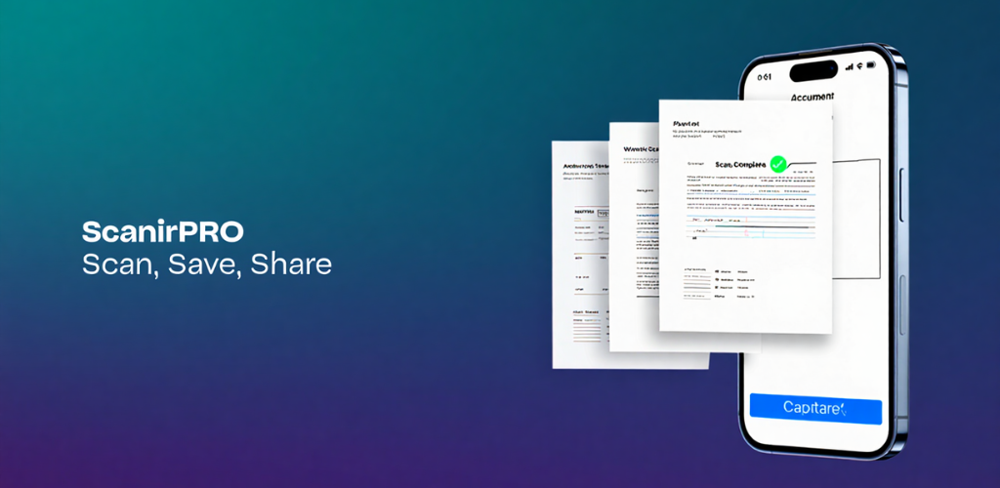
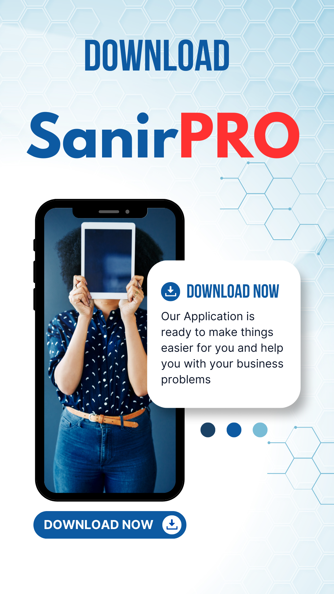

ScanirPRO
Smart AI Document & QR Scanner (PDF, OCR)
About
ScanirPRO transforms your Android phone into a complete scanning solution. You can capture documents, ID cards, receipts, books, photos, business cards, or QR codes with high accuracy. With smart edge detection, auto-cropping, and enhancement filters, your scans are always clean and professional.
Features
- Smart Scan – Auto edge detection with real-time preview
- Auto Crop & Enhance – Clear, sharp output with filters
- Multi-Page PDF Support – Scan and merge multiple pages
- Save as PDF or Image – High-resolution export
- OCR Text Recognition – Extract editable text (multi-language)
- QR Code Scanner – Scan and decode QR instantly
- File Manager – Organize, rename, delete, or share scans
- Gallery & PDF Import – Enhance existing files
- One-Tap Sharing – WhatsApp, Gmail, Drive, and more
- Dark Mode – Sleek modern UI for comfortable use
Screenshots

Support
Email us at: scanirpro.app@gmail.com
Privacy
ScanirPRO does not store or share your scanned documents. All scans remain on your device. See our Privacy Policy for more details.